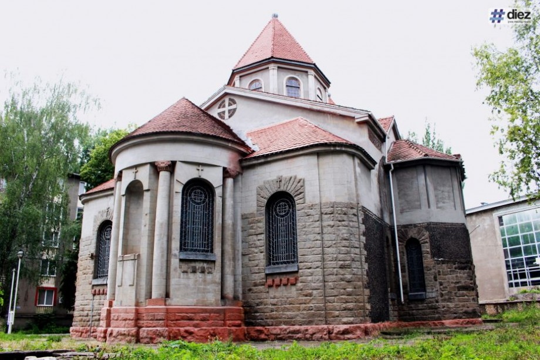

Explorează Bălți
Muzeul de Istorie și Etnografie Bălți
Muzeul din Bălți dispune de un fond muzeistic, de bunuri materiale mobile în număr de peste 34 000 de unități. Veți putea vedea colecții variate din arheologie, colecții numismatice (dinarul roman cu chipul împăratului Marcus Aurelius, monede bizantine, medalii și monede dedicate lui Mihai Eminescu), documente vechi (scrisori și circulare emise de Visarion Puiu), armament (spada unui ostaș din armata lui Ștefan cel Mare), etnografie (costume naționale). Printre exponate se evidențiază o bisericuță cu înălțimea de circa un metru, confecționată integral din miez de pâine, păstrată anterior la Catedrala „Sfântul Nicolae” din Bălți.
Lacul orășenesc
Este unul dintre cele mai populare locuri de agrement și de practicare a sportului din oraș. Copiii, adulții, bătrânii, animalele de companie vin aici să se odihnească în sânul naturii. Lacul se află în centrul orașului, de aceea îți va fi ușor să te deplasezi în acest loc. Apropo, aici se permit picnicurile, așa că poți savura din plin ospitalitatea orașului, iar odată cu apusul soarelui vei putea admira toată frumusețea naturii.
Parcul „Scuarul Maria”
Parcul „Scuarul Maria” este situat în zona centrală istorică a orașului Bălți și reprezintă un complex de carusele și cafenele pentru părinți și copii. Este cel mai potrivit loc în care să te distrezi împreună cu copiii. Dacă nu te temi de înălțime, te provocăm să urci pe „Roata dracului” și să vezi întregul oraș de la înălțime. Pe teritoriul parcului „Scuarul Maria” adulții vor găsi mai multe distracții pe plac.
Biserica Armenească
Această clădire se află peste drum de parcul „Andrieș” și reprezintă o adevărată comoară a orașului. În municipiul Bălți se află una dintre cele mai frumoase monumente arhitecturale din Moldova. Este vorba despre biserica „Sfântul Grigore Luminătorul”, care este localizată în centrul orașului și reprezintă o adevărată destinație turistică. Acest lăcaș în mare parte a timpului este închis, însă dacă vei avea noroc să prinzi momentul cânt este deschis, atunci nu rata ocazia să intri și să discuți cu enoriașii.
Teatrul Național "Vasile Alecsandri"
Vechea clădire a Teatrului Muzical Dramatic „Vasile Alecsandri” a fost inaugurată în anul 1934 și se numea Teatrul „Scala” – denumirea era imprimată și pe mozaicul din foaierul mic. Avea 659 de locuri și balcon, cu o acustică foarte bună a sălii de spectacole. Deși era și o mică trupă de actori bălțeni, localul era destinat, cu preponderență, trupelor sosite în turneu. Astfel, aici au evoluat „Ateneul popular” din Iași, condus de Vasile Popovici, Teatrul „Cărăbuș” al lui Constantin Tănase și faimoasa „Alahamdra” – ambele din București. Pe scena Teatrului „Scala” au evoluat Maria Filotti, George Enescu, Maria Tănase, Gică Petrescu și mulți alții.